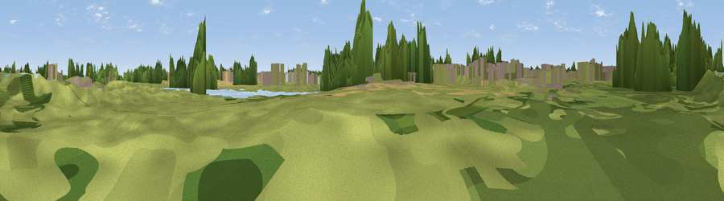

Viewpoint near Branton
#45463 in England · top 98% of its area beats it · near BrantonWhere it is
The exact computed spot (SE 64054 01047). Click the marker for map links.
The view, rendered

A 360° render of this exact spot computed from the terrain model, tree cover and land cover — summer colours, afternoon light, calibrated against photographs of famous viewpoints. Real trees, hedges and buildings will differ in detail.
The panorama
Grey silhouette: terrain skyline in each direction (720 bearings, Earth curvature and refraction included). Dashed green: skyline with trees (+15 m) and buildings (+8 m) as obstacles. Blue strip: how far the ground is visible on each bearing.
Where the view opens
Wedge length = distance to the farthest visible ground on that bearing (vegetation-aware). Rings at 10, 25 and 50 km.
What fills the view
45% grassland · 21% woodland · 12% built-up · 11% water · 9% cropland · 2% wetland
Angular shares of the visible panorama (visual magnitude), not map area. Landscape diversity 0.64 (0–1 Shannon).
Key numbers
More beautiful places nearby
The staircase of upgrades: each row has a higher view potential than everything closer. Driving times are estimates from straight-line distance, calibrated against real road routing — check an actual route before setting out.
| Place | Direction | Drive | Score |
|---|---|---|---|
| Viewpoint near Branton | SW · 0 km | ~2 min | 14.2 |
| Viewpoint near Armthorpe | NW · 4 km | ~9 min | 33.5 |
| Viewpoint near Loversall | WSW · 9 km | ~18 min | 34.4 |
| Viewpoint near Stainforth | N · 10 km | ~20 min | 53.2 |
| Viewpoint near Stainforth | N · 11 km | ~20 min | 61.9 |
| Viewpoint near Maltby | SW · 13 km | ~24 min | 70.7 |
| Viewpoint near Whitley | W · 32 km | ~50 min | 72.1 |
| Viewpoint near Wharncliffe Side | W · 33 km | ~51 min | 75.2 |
53.50223, -1.03579 · source: osm viewpoint · position refined by local search. Computed location — check access rights before visiting.